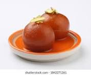

Ingredients
- 1 cup milk powder
- 1/4 cup all-purpose flour
- 1/4 cup ghee (clarified butter)
- 1/2 cup milk
- 1/2 teaspoon baking powder
- 1 cup sugar
- 1 cup water
- 1/2 teaspoon cardamom powder
- Oil for frying
Instructions
- In a bowl, mix milk powder, flour, and baking powder.
- Add ghee and mix until crumbly. Gradually add milk to form a soft dough.
- Shape the dough into small balls, making sure they are smooth.
- Heat oil in a pan and fry the balls on low heat until golden brown.
- In a separate pan, combine sugar, water, and cardamom powder to make the syrup. Boil until slightly thickened.
- Soak the fried balls in the warm syrup for at least 30 minutes.
- Serve warm or at room temperature.
Nutritional Information
Calories: 180 per piece
Protein: 2g
Carbohydrates: 30g
Fat: 8g